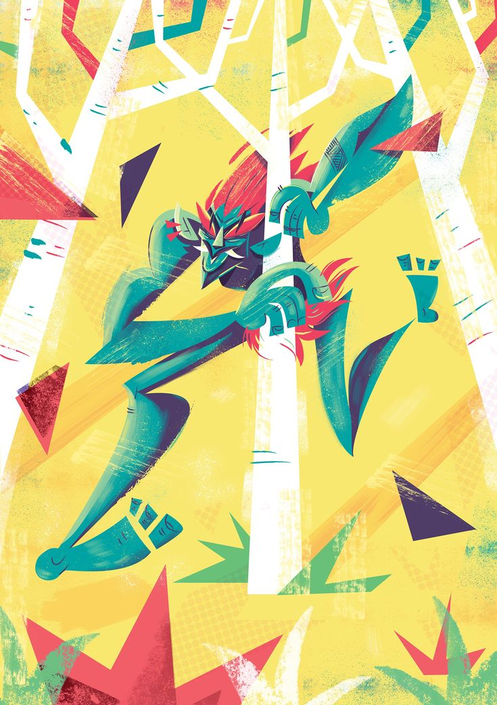

Folkloria Brasil
Descobrir, explorar e preservar os mitos e lendas do Brasil.
Sobre esse Site:
O Folkloria Brasil é um acervo digital que reúne, reconta e preserva os principais mitos, lendas e figuras do folclore das cinco regiões do país. Aqui você conhece a origem de cada história, descobre curiosidades escondidas e explora o Brasil pelo mapa.
Instruções
Os mais Famosos
-

-

-

-

-